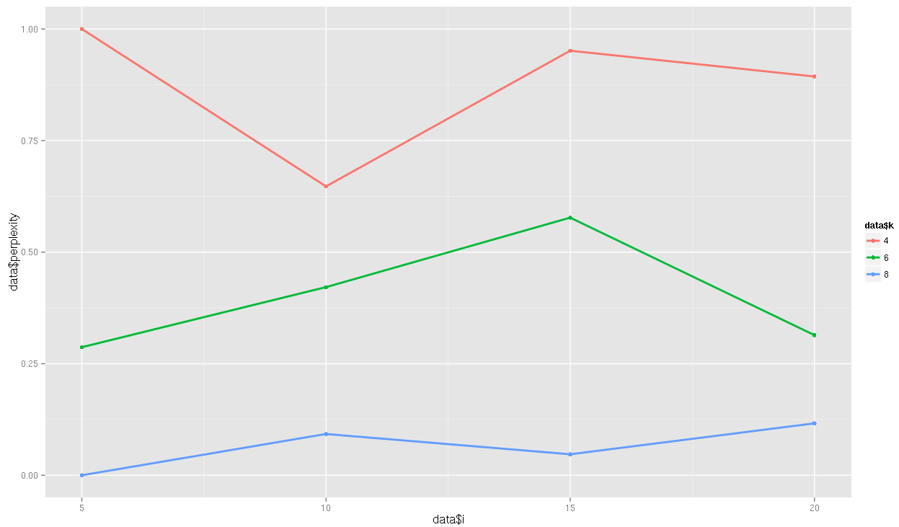
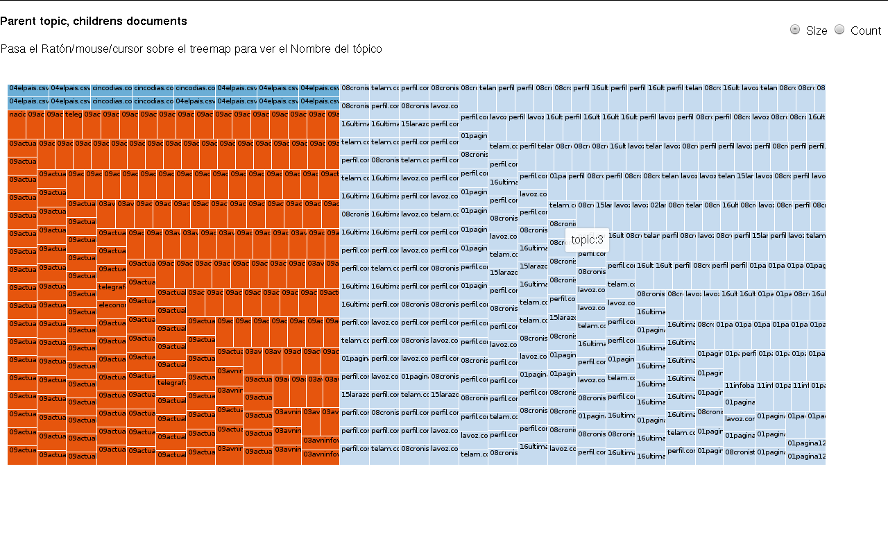
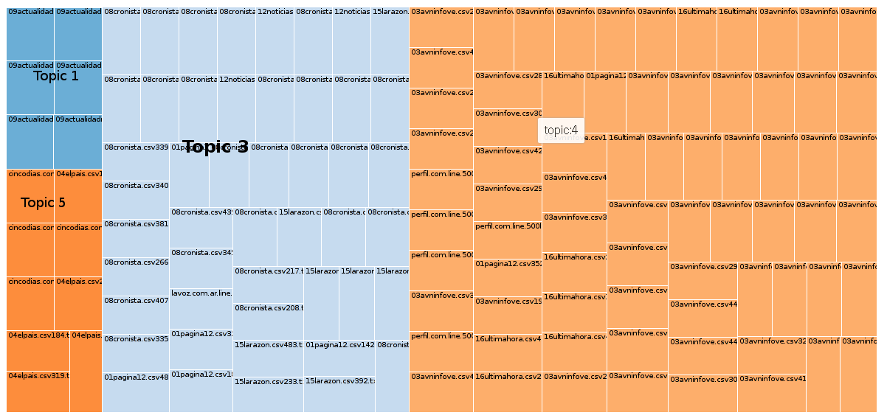
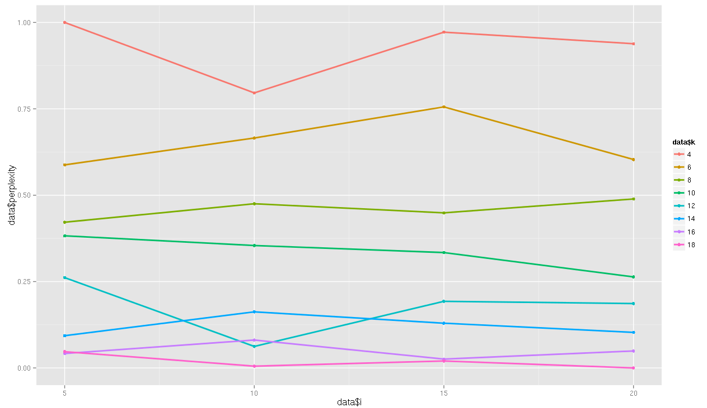
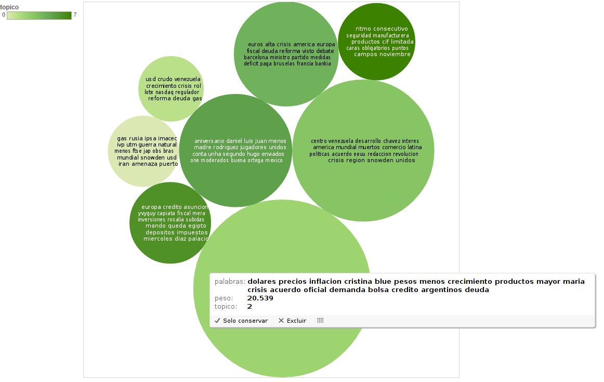

Modelado de Topicos
Es una técnica para tratar documentos que no tienen alguna categorización, y asume que cada documento es una mezcla aleatorias de categorías o tópicos
Un tópico en el contexto de modelado de tópicos es una distribución de probabilidades de palabras para un conjunto, e indica la probabilidad que una palabra aparezca en un documento sobre un tópico en particular
Utilidad.
- Puede ser usado para clasificar documentos similares
- Mejorar la idexación de texto y los métodos de recuperación de la información
- Identificar la evolución de ciertos tópicos sobre un periodo de Tiempo
- Encontrar relaciones entre diferentes tópicos
- Predecir citaciones en base a la presencia de similares topicos en un texto
- Encontrar patrones repetitivos que pueden derivar de la estructura del texto.
Supuestos
-
"exchangeability"
El modelado de tópicos asume que las palabras que comprende el texto fueron generadas aleatoriamente, y no tiene relación la secuencia en la que aparecen las palabras
evaluar que modelo es mejor
- "Perplexity"
- A través de ensayo y N iteraciónes.
En Resumen:
-
Hacer un modelo en base a 10.000 documentos aproximadamente.
-
Asignar un topico a nuevos documentos.
- Hacer un modelo en base a 10.000 documentos aproximadamente.
- Asignar un topico a nuevos documentos.
¿Cómo lo hicimos?

Topicos k = 4
- 0 : europa rusia guerra fiscal crisis mayor mundial euros snowden america muertos apoyo menos iran amenaza unidos reino unido asuncion
- 1 : dolares usd gas precios menos blue cristina venezuela inflacion natural acuerdo crudo mayor ipsa imacec ivp utm petroleo bolsa
- 2 : alta productos fernandez mexico campos cristina maria luz juan martin ritmo kirchner ranking consecutivo aniversario luis hombre manufacturera puntos
- 3 : crisis crecimiento reforma america centro venezuela desarrollo latina ministro plan mayor deuda mundial comercio inversiones economico problemas rol unidos
Qué tan bueno eran los modelos?
Con k = 4 y el intervalo=10
Con k=6 y el intervalo=5
Con k=8 y el intervalo=5

Con k=10 y el intervalo=20

Y así sucesivamente..
El Modelo con mayor Peso de topico..
A tomar en cuenta:
- El Parametro DirichLet permite darle un peso al tópico, haciendo que sobresalgo por encima de otros tópicos, y la variacion de este parametros permite un mejor ajuste del modelo. El intervalo permite que el software realice un calculo optimizado de los parametros alfa y beta cada N iteraciones.
- Conforme se añaden más topicos el modelo se vuelve más específico, y tiende a colocar todos los documentos que pertenecen a un diario en un mismo tópico, para k=10, ocurrió esto, de 10 topicos 8 tenía una probabilidad alta por encima de 0.998 y 7 topicos estaban asociados a un solo diario. No existe un modelo mejor que otro depende del objetivo. Si se desea realizar una clasificador de texto en base al modelado de tópicos, podríamos usar k=cantidad de clases y modificar los parametros que permitan reducir la perplejidad al máximo, de forma que cada tópica pueda representar una clase.
En resumen:
Importante es saber que luego de cada ejecución, siempre arrojará resultados diferentes ya que Mallet utiliza Gibbs sampling por defecto, para calcular la probabilidad a posteriori. Por ende la comparación entre modelos no es muy práctica.
La cantidad de tópicos recomendada no existe por ende se debe realizar una gran cantidad de iteraciones para observar cual se ajusta mejor a la data. Usualmente mientras más general menor cantidad de topicos mientras más especifico cada topico tendrá menor cantidad de diarios.